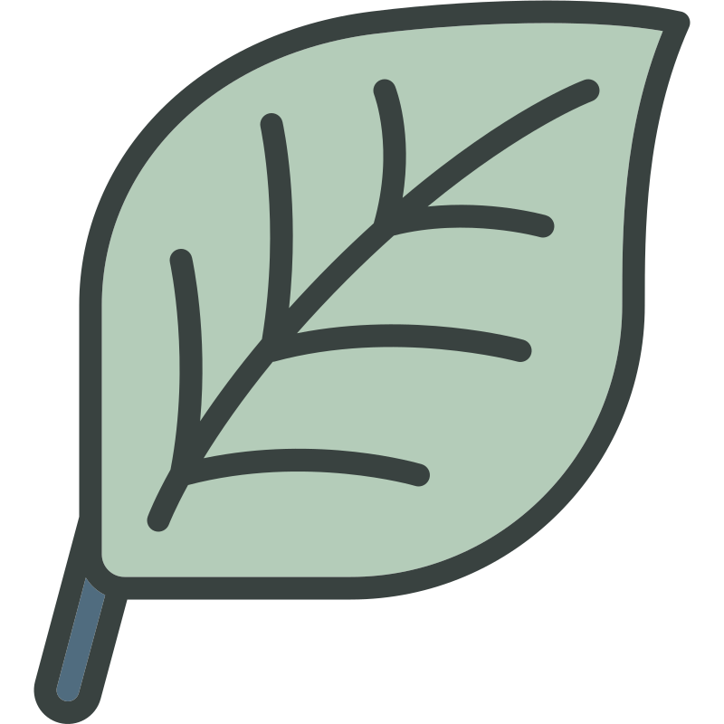
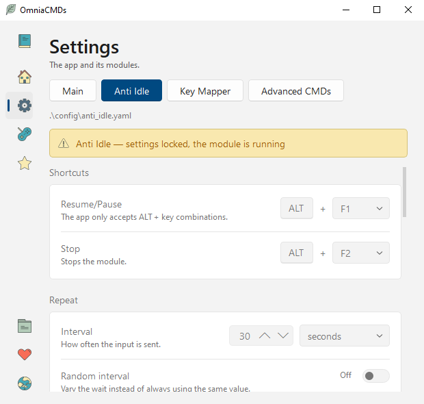
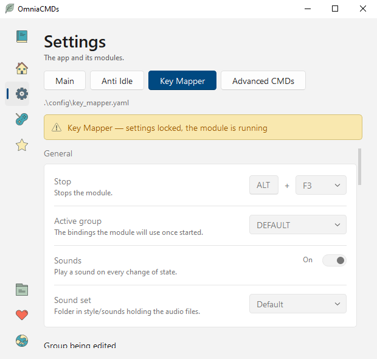
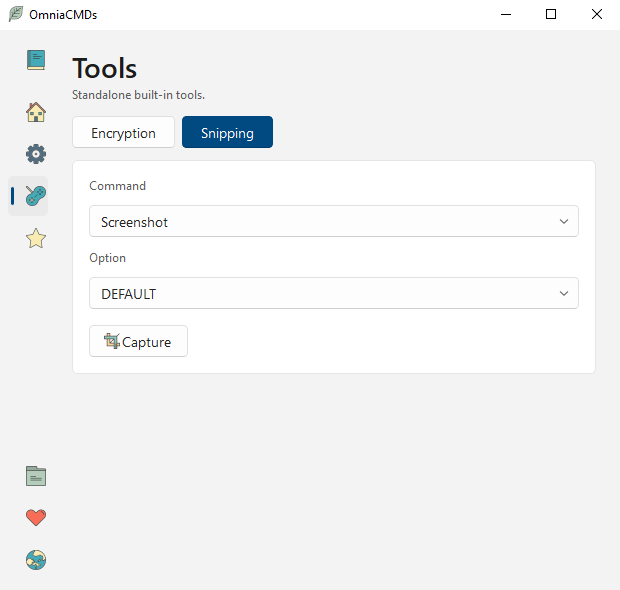
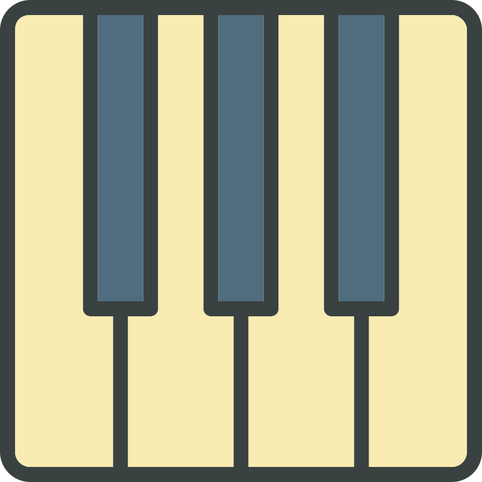
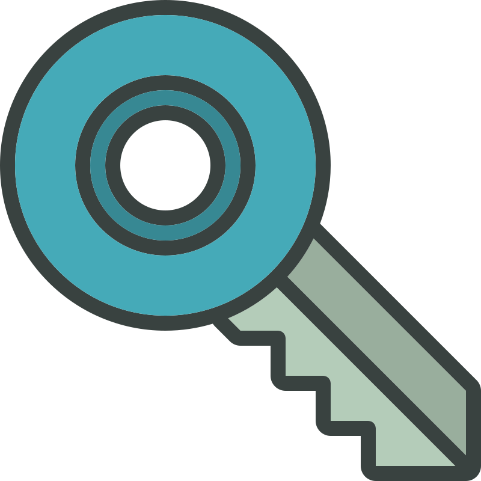
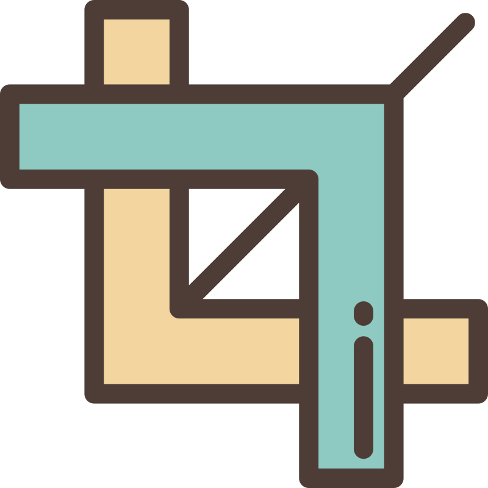
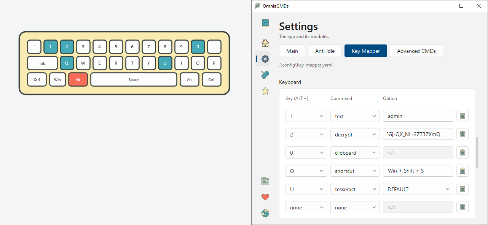
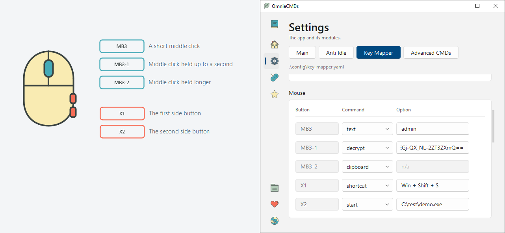
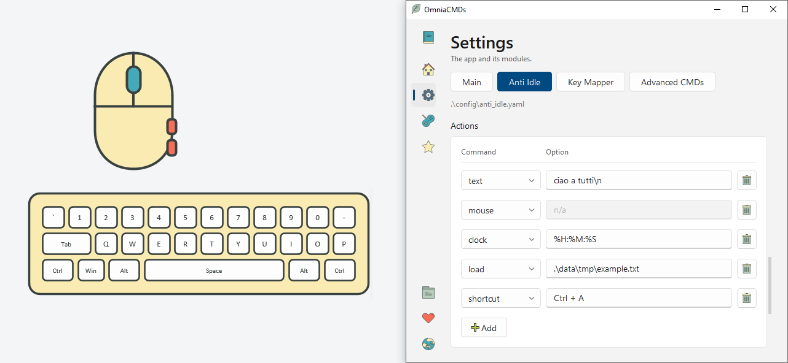

Anti Idle
Simulates human-like input to keep sessions alive in any environment where periodic user input is required to prevent inactivity or timeouts.

OmniaCMDsEN IT ES
A powerful Windows app that keeps a session alive and turns ALT + any key of the keyboard, or a middle click, or a side button of your mouse, into whatever you need it to do. Nothing to install: download it, run it, and enjoy.
Download v1.0.0 Read the documentation
Built on freedom - Free and Open Source under GPLv3.





OmniaCMDs is built around two main components, called modules — Anti Idle and Key Mapper — plus two built-in tools for advanced purposes: Encryption and Snipping.
Modules
Simulates human-like input to keep sessions alive in any environment where periodic user input is required to prevent inactivity or timeouts.

Assigns actions to ALT + any key of the keyboard and to the middle and side buttons of the mouse.
Built-in tools

Encrypts a password so it can live inside the Key Mapper configuration file without being readable.

Lets you select an area of the screen and either save it as an image (screenshot) or extract its text using Tesseract OCR.
All components of the program rely on various commands, some advanced, but all simple and easy to configure. They allow you to type text, paste from the clipboard, execute shortcuts, insert the current time, auto-fill forms with file contents, perform screen reading, and much more.



Nothing is locked away. Every setting lives in a file you can open, read and copy, and the app follows the look of Windows so it feels at home on your desktop.
Swap the icon set for another one: they are plain SVG files in a folder, and the change is immediate.
Every action can have its own sound. The sound sets are folders of audio files, so you can record your own or use none at all.
English, Italian and Spanish for now. Each one is a single JSON file: translate it, drop it in, and the app speaks your language.
Four small YAML files, commented and readable. Change them in the app or in a text editor, and carry them from one computer to another.
Send the app to the tray and it keeps working in the background, with nothing on screen until you need it.
The whole program lives in its own folder. No installer, no registry, no traces left behind.
OmniaCMDs is written and maintained by Andrea Querci. It is free software under the GNU GPL v3.
One archive, no installer, no account. The documentation covers every command and every message the app can write.